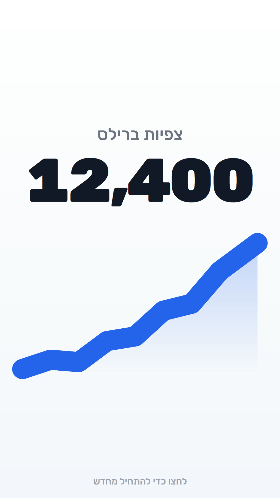

אפקטים לרילס?
Claude בונה בצ'אט
מספר שרץ, כותרת שנכתבת, רשימה עם וי. אפקטים כאלה עושים רילס להיראות מקצועי, ובדרך כלל דורשים תוכנת עריכה. Claude בונה אותם מבקשה אחת, והם רצים על המסך מוכנים להקלטה.
התוצאה האמיתית
ביקשנו מ-Claude 3 אפקטים בבקשה אחת (היא למטה, להעתקה). אלה 3 רגעים מתוך מה שהוא בנה, כמו שהם. בנינו ב-Claude (Opus 5.5, ב-Claude Code), 9.11.2026. בצ'אט הרגיל התוצאה יכולה לצאת קצת שונה.

כל אפקט רץ 4 שניות. בגרסה הראשונה המרקר הצהוב לא הופיע, וסיבוב תיקון אחד סידר את זה.
כמה זה עולה
לפי Adobe, תוכנת האפקטים After Effects עולה 119 ₪ לחודש בתוכנית החודשית. לפי Anthropic, הכלי של Claude שבונה את זה (Artifacts) פתוח בכל התוכניות, גם בחינמית. After Effects עושה הרבה יותר, ברור. לכותרת, מספר או רשימה, מספיק לבקש.
מה צריך
חשבון ב-Claude. ההגדרה Create and edit files דלוקה (בהגדרות הישנות היא נקראת Code execution and file creation). איפה: Settings (הגדרות) ← Capabilities (יכולות).
איך עושים
- מדליקים את ההגדרה למעלה.
- פותחים שיחה חדשה ומדביקים את הבקשה שלמטה. תחליפו מספרים, מילים וצבעים.
- Claude בונה, והאפקט רץ בחלון שליד השיחה.
- משהו לא נראה טוב? כותבים לו מה לא עובד: ״המרקר לא מופיע״, ״הגרף מהיר מדי״.
- מקליטים את המסך בזמן שהאפקט רץ, חותכים את ההתחלה והסוף, ומכניסים לרילס בעורך.
תבנה לי 3 אפקטים לרילס באינסטגרם, במסך אנכי, רקע בהיר וטקסט בעברית: 1. מספר שעולה מ-0 ל-12,400 צפיות, וגרף שמצייר את עצמו מתחתיו. 2. כותרת "3 טעויות בקורות חיים" שנכתבת אות אחרי אות, ומרקר צהוב עובר על המילה "טעויות". 3. רשימה של 3 דברים שנכנסים אחד אחד, וכל אחד מקבל וי ירוק. כל אפקט 4 שניות, אחד אחרי השני, ושיתחיל מחדש כשלוחצים על המסך.
עוד אפקטים לבקש
- ״ספירה לאחור מ-5 עם מספרים גדולים, לפני חשיפה.״
- ״מחיר ישן שנמחק בקו, ומחיר חדש שקופץ במקומו.״
- ״3 מילים שנכנסות אחת אחת, כל אחת בצבע אחר.״
כן, אבל
זו הקלטת מסך, לא קובץ וידאו מוכן. ייצוא ישיר לווידאו (התבנית Motion) קיים לפי Anthropic רק בתוכניות Team ו-Enterprise. והגרסה הראשונה לא תמיד מושלמת: בודקים בעיניים ומבקשים תיקון.
מקורות
- Anthropic, עזרה: מה זה Artifacts: support.claude.com
- Adobe, המחירים של After Effects: adobe.com